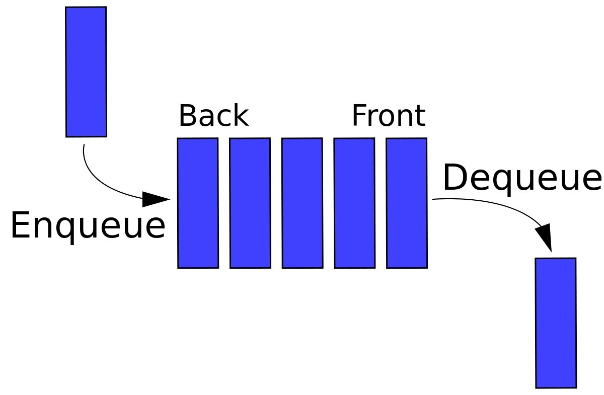
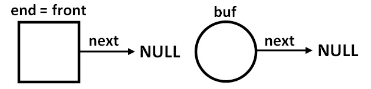
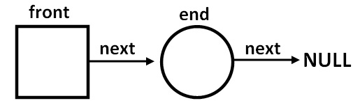
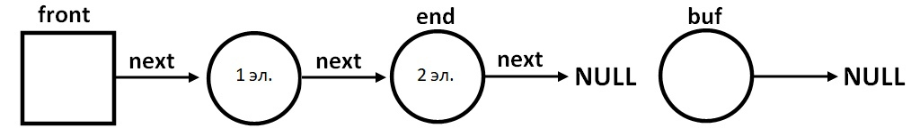
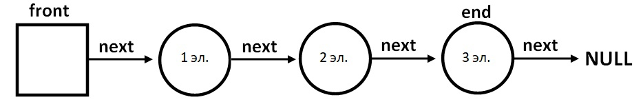
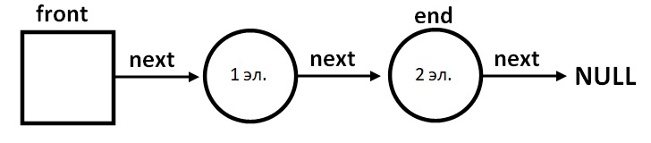

Очередь
Навигация по странице:
1. Алгоритм
2. Функция enqueue
3. Визуализация функции enqueue
4. Функция dequeue
5. Визуализация функции dequeue
6. Полный алгоритм
Очередь — абстрактный тип данных с дисциплиной доступа к элементам «первый пришёл — первый вышел» (FIFO, англ. first in, first out).
Добавление элемента (принято обозначать словом enqueue(push) — добавить в очередь) возможно лишь в конец очереди, выборка — только из начала
очереди (что принято называть словом dequeue(pop) — убрать из очереди), при этом выбранный элемент из очереди удаляется. Очередь в программе сравнима с очередью в магазине:
сначала обслуживается первый покупатель, потом второй и так далее, а подходят люди с конца.

Способ реализаций очереди осуществляется с помощью массива или связанного списка. Пока мы будем рассматривать второй вариант.
Преимуществом является ограничение памяти лишь памятью компьютера. Недостатками являются: сложность в разработке, выделение большего количества памяти, память сильнее фрагментируется.
Алгоритм:
В программе, мы храним указатель на первый элемент очереди - front, и на последний элемент - end.
Указатель end будет равен front при добавлении первого элемента в очередь.
Тем самым, при изменении end в дальнейшим, мы потеряем указатель на первый элемент очереди - front.
Поэтому инициализируем front в самом начале программы и только после этого начинаем добавлять элементы
в очередь с помощью функции enqueue. Получается, что front - это указатель, который будет константным на всем протяжении существования очереди.
front будет указывать на первый элемент очереди. Доступ к первому элементу очереди будет осуществляться
как front->next. Полностью это станет понятным после изучения кода алгоритма.
Функция enqueue:
В функцию передаем указатель на последний элемент в нашем списке и значение переменной, которую нужно добавить.
Действия функции:
1. Создаем буферный указатель buf(2);
2. Заполняем его нужными значениями(4-6);
3. Добавляем в список(7);
4. Обновляем значение end с помощью return, теперь последний элемент - это только что добавленный(8).
1
2
3
4
5
6
7
8
9
10
11
struct queue* enqueue(struct queue* end, int x) { struct queue* buf = malloc(sizeof(struct queue)); if (buf) { // проверка malloc buf->X = x; buf->next = NULL; buf->size = end->size + 1; end->next = buf; return buf; } return end; }
Давайте визуализируем действия этой функции:
1. Для добавления первого элемента в очередь:
1.1. end = front, передаем функции указатель end, выделяем память под новый указатель buf и заполняем его значениями, очередь выглядит так:

1.2. end->next = buf (front->next = buf), end = buf, теперь очередь выглядит так:

2. Для добавления последующих элементов в очередь:
2.1. Передаем функции указатель end, выделяем память под новый указатель buf и заполняем его значениями, очередь выглядит так:

2.2. end->next = buf, end = buf, теперь очередь выглядит так:

Функция dequeue:
Функция получает указатель front, после чего делаем замену front = front->next. То есть мы
просто "выбросили" первый элемент, заменив его вторым.
1
2
3
int dequeue(struct queue* front) { return front->next; }
Давайте визуализируем действия этой функции:
3. Удаление элемента:
3.1. Функция получает указатель front, на данный момент очередь выглядит так:
3.2. font = font->next, теперь очередь выглядит так:

Если очередь удалена полностью, то front будет равен последнему добавленному элементу, так же как и end, тем самым мы можем спокойно запускать функцию enqueue.
Полный алгоритм:
Входные данные:
push x - вставить элемент x очередь;
pop - удалить первый элемент очереди;
end - конец программы.
Если очередь не пуста, то на каждом шаге цикла алгоритм выводит первый элемент очереди.
Код на Си:
1
2
3
4
5
6
7
8
9
10
11
12
13
14
15
16
17
18
19
20
21
22
23
24
25
26
27
28
29
30
31
32
33
34
35
36
37
38
39
40
41
42
43
44
45
46
47
48
49
50
51
52
53
54
55
56
57
58
59
#define _CRT_SECURE_NO_WARNINGS #include <locale.h> #include<stdio.h> #include<stdlib.h> #include<string.h> struct queue { struct queue* next; int X; int size; }; struct queue * enqueue(struct queue* end, int x) { struct queue* buf = malloc(sizeof(struct queue)); if (buf) { // проверка malloc buf->X = x; buf->next = NULL; buf->size = end->size + 1; end->next = buf; return buf; } return end; } struct queue* dequeue(struct queue* front) { if (front->next == NULL) { printf("Очередь пуста!\n"); return front; } return front->next; } int main() { setlocale(LC_ALL, "Rus"); printf("Команды: push x - добавить элемент x, pop - удалить элемент, end - конец программы\n"); struct queue* front, * end; front = malloc(sizeof(struct queue)); end = malloc(sizeof(struct queue)); if (front && end) { // проверка malloc front->next = NULL; front->size = 0; end = front; //связь начала списка с постоянно меняющейся переменной end int n, m, x, i, flag = 0; char s[10]; while (flag == 0) { scanf("%s", s); if (strcmp(s, "push") == 0) { scanf_s("%i", &x); end = enqueue(end, x); // добавление элемента } if (strcmp(s, "pop") == 0) { front = dequeue(front); // удаление элемента } if (strcmp(s, "end") == 0) flag = 1; if(front->next != NULL) printf("Первый элемент равен %i \n", front->next->X); } } return 0; }
Принцип работы очереди применяется всюду, например, алгоритм обхода графа в ширину BFS.
Code.C
© Copyright Павел Калашников 2021
обратная связь code.c04@mail.ru